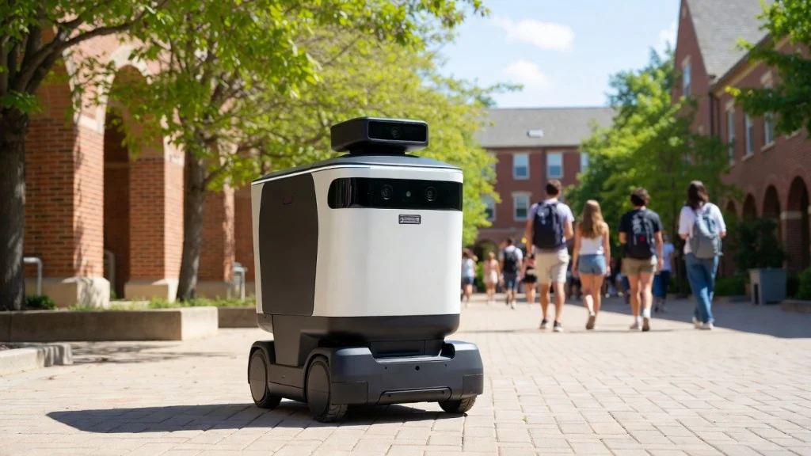

Please design an autonomous rover.
May I ask what is it for?
Where will it be used?
When and how often will it have to operate?
Food delivery to homes and doorsteps.

MYP Design · Inquiry
Lesson objective
Learn and apply how factual, conceptual, and debatable questions are used in the design process.
Rover design